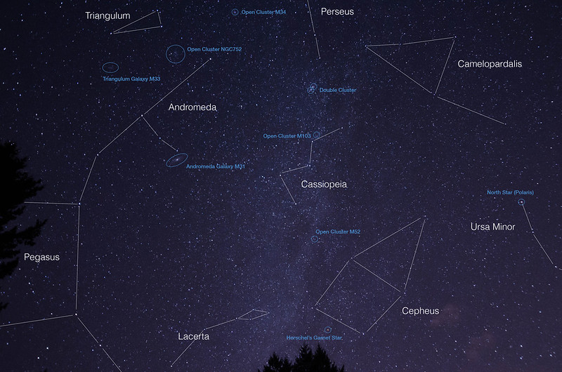
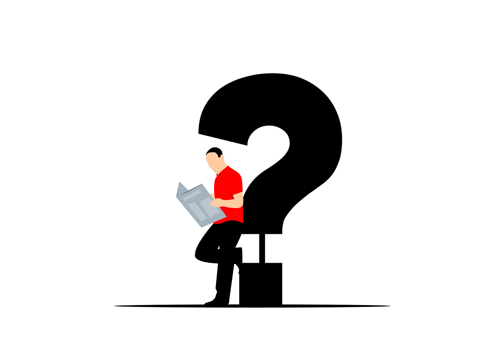

Dictionary
Build

To make something combining different materials.
Hacer algo combinando diferentes materiales.
The boy builds with the plastic red pieces.
El niño construye con las piezas de plástico rojas.
Spanish word:
Construir
Audio:
Constellation
Definition:
A constellation is a group of stars that form a pattern or shape in the sky.
Una constelación es un grupo de estrellas que forman un patrón o una figura en el cielo.
Example:
The Big Dipper is a well-known constellation in the northern sky.
La Osa Mayor es una constelación muy conocida en el cielo del norte.
Spanish word:
Constelación
Audio:
Fact
Definition:
It is something that is true or information that can be proven.
Es algo que es verdadero o información que se puede probar.
Example:
It is a fact that the Earth orbits the Sun.
Es un hecho que la Tierra gira alrededor del Sol.
Spanish word:
Hecho
Audio:
Galaxy
 Definition:
Definition:
It is a huge collection of gas, dust, and billions of stars and their solar systems.
Es un grupo de millones de estrellas, gas, polvo y sus sistemas solares.
Example:
The Milky Way is our galaxy.
Nuestra galaxia es la Vía Láctea.
Spanish word:
Galaxia
Audio:
Knowledge
 Definition:
Definition:
It is what you know about something or the information and facts you learn.
Es lo que sabes sobre algo o la información y los hechos que aprendes.
Example:
She has a lot of knowledge about animals.
Ella tiene mucho conocimiento sobre los animales.
Spanish word:
Conocimiento
Audio:
Planet
 Definition:
Definition:
A planet is a large, round object that orbits a star. Earth is a planet, like Mars and Jupiter.
Un planeta es un objeto grande y redondo que gira alrededor de una estrella. La Tierra es un planeta, al igual que Marte y Júpiter.
Example:
Earth is the planet where we live.
La Tierra es el planeta en el que vivimos.
Spanish word:
Planeta
Audio:
Seem
To look or appear to be something, but not always for sure.
Lucir o aparentar ser algo, pero no siempre con certeza.
Example:
The cake seems delicious.
El pastel parece delicioso.
Spanish word:
Parecer
Audio:
Skill

Definition:
Knowledge or ability to do something well.
Conocimiento o habilidad para hacer algo bien.
Example:
He has a special skill with the dancing.
Tiene una habilidad especial con el baile.
Star

A star is a big ball of hot gas that shines in the sky. The Sun is a star.
Una estrella es una gran bola de gas caliente que brilla en el cielo. El Sol es una estrella.
Example:
I see a star in the sky.
Veo una estrella en el cielo.
Train

Practise a skill or behaviour over a period of time.
Practicar una habilidad o desarrollar un hábito durante un periodo de tiempo.
Example:
Writers must write a lot in order to train and develop their qualities.
Los escritores deben escribir mucho para entrenar y desarrollar sus cualidades.
Update
Definition:
To make something more modern or to give new information about something.
Hacer algo más moderno o dar nueva información sobre algo.
Example:
I need to update my phone to the latest version.
Necesito actualizar mi teléfono a la última versión.
Spanish word:
Actualizar
Audio:

 Definition:
Definition: To plan a space trip.
To plan a space trip. To create a space base.
To create a space base. Work in groups of four.
Work in groups of four. First you look at the pictures.
First you look at the pictures.

 Tonight, try to find the Big Dipper.
Tonight, try to find the Big Dipper.
 It is important to learn some things again
It is important to learn some things again You will be surprised!
You will be surprised! The Sun is white
The Sun is white{kind=link}
{kind=link}